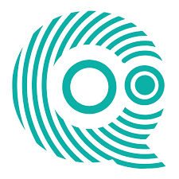
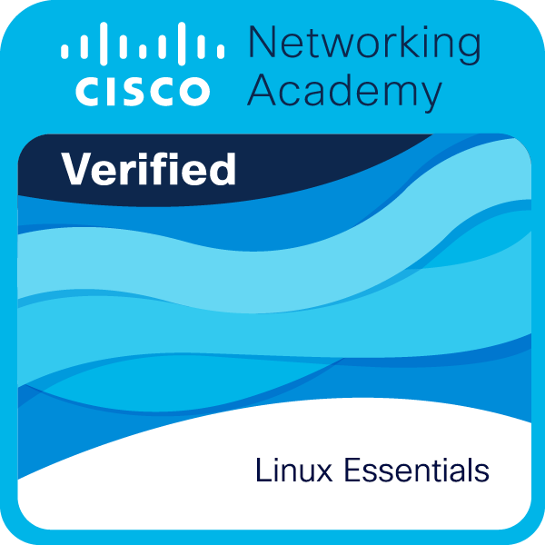

¡Hola! 👋 Soy Antonio
Técnico Informático con Grado Medio en Sistemas Microinformáticos y Redes (2022-2024).
Actualmente curso el segundo año del Grado Superior en Administración de Sistemas Informáticos en Red (ASIR).
Apasionado por la tecnología, la administración de sistemas y el aprendizaje continuo para afrontar nuevos retos. Y en continuo aprendizaje.
🛠️ Habilidades Técnicas
Sistemas Operativos
Redes
Seguridad
Virtualización
Bases de Datos
Scripting
📚 Actualmente Aprendiendo
Grado Superior ASIR
Formación Académica
Grado Medio de Sistemas Microinformáticos y Redes
IES Sierra de Gádor (Berja)
2022 - 2024Grado Superior de Administración de Sistemas Informáticos en Red
IES Al-Andalus (Almería)
2024 - PRESENTEPrácticas en Empresa

Quantasoft Praga
Marzo 2024 - Junio 2024 (3 meses)
Prácticas Erasmus en República Checa (Praga) con certificado Europass.
Diputación de Almería
3 semanas y 3 días
Prácticas en Diputación de Almería (España) en la nueva FP DUAL.
Certificados y Cursos

CCNA: Introducción a las redes
2025

Fundamentos de Linux
2025